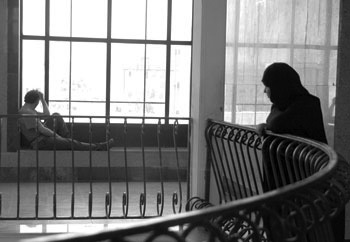

پذيرش > سایت نوشته ها > لايحه حمايت از خانواده يا آيين دادرسي خانواده
 گفتگو با زهره ارزني گفتگو با زهره ارزني

 لايحه حمايت از خانواده يا آيين دادرسي خانواده لايحه حمايت از خانواده يا آيين دادرسي خانواده
9 مرداد 1387 - روزنامه اعتماد - نسخه قابل چاپ
هنوز دو ماه از تکيه زدن نمايندگان بر صندلي هاي سبز بهارستان نگذشته بود که در ميان انبوه لوايح باقيمانده از مجلس هفتم، نمايندگان لايحه «حمايت از خانواده» را بيرون کشيدند تا کار ناتمام مجلس هفتم را به انجام رسانند. لايحه يي که از همان زمان ارائه شدنش به مجلس و انتشار محتواي آن با انتقادات و اعتراضات از سوي برخي طيف هاي فکري و سياسي روبه رو شد. اکنون کليات اين لايحه بدون هيچ تغييري در کميسيون حقوقي و قضايي مجلس به تصويب رسيده و قرار است به صحن علني مجلس برود. اعتراضات به اين لايحه از آنجا آغاز شد که قوه قضائيه در شهريورماه سال گذشته لايحه يي را در 50 ماده به مجلس فرستاد تا همان گونه که مسوولان قوه قضائيه نيز اذعان کرده بودند به جهت نقص جدي قوانين مربوط به خانواده لايحه جامع و کاملي به مجلس فرستاده شود تا خلأهاي قانوني مربوط به خانواده مرتفع و ابهامات موجود در آن برطرف شود. اما اندکي پس از انتشار محتواي اين لايحه صاحب نظران تاکيد کردند نه تنها با تصويب اين لايحه مشکلات موجود برطرف نخواهد شد، بلکه مشکلات جدي تر را ايجاد خواهد کرد و باعث تزلزل بنيان خانواده ها خواهد شد. در واقع لايحه حمايت از خانواده را يک «آيين دادرسي خانواده» ارزيابي کردند که بدون هيچ نگاه برابر به زنان و مردان بار ديگر تشريح شده و در مکملي که دولت بدون هماهنگي با قوه قضائيه به آن افزوده است، شرط اجازه همسر اول که مهم ترين شرط از شروط هشتگانه ازدواج مجدد قانون فعلي بوده، برداشته شده و به مردان اجازه داده در صورت توانايي مالي با اجازه دادگاه و احراز عدالت ازدواج مجدد داشته باشند.
در اين ميان سوال مهمي که مطرح مي شود اين است که آيا احراز عدالت قابل تشخيص است؟ بر همين اساس بود که صاحب نظران تاکيد کردند دولت نمي تواند در لوايح قضايي تغييري ايجاد کند و اين را مغاير با قانون اساسي دانستند و عنوان کردند که قوه قضائيه بايد از دولت بخواهد اين ماده را از لايحه حذف کند. هرچند عليرضا جمشيدي سخنگوي قوه قضائيه در نشست هاي خبري خود از دولت خواست ماده 23 را از لايحه حمايت از خانواده حذف کند، اما دولت در جهت حذف اين ماده تاکنون اقدامي نکرده است و کميسيون قضايي و حقوقي مجلس نيز بدون هيچ تغييري کليات اين لايحه را تصويب کرده است. از سوي ديگر اين ماده اگرچه داراي اهميت است اما تنها ماده يي نبود که مورد نقد واقع شد. غير از ماده 23، حقوقدانان و تشکل هاي صنفي زنان ايرادات ديگري را بر اين لايحه برشمرده اند و همواره تاکيد کرده اند نبايد به همان صورت به تصويب برسد.
مواردي از جمله عدم الزامي بودن ثبت نکاح موقت در اين لايحه و موکول شدن آن به آيين نامه ديگري از سوي وزير دادگستري، عدم الزامي بودن حضور حداقل يک مستشار زن در دادگاه و اختياري بودن حضور آن و نيز وصول ماليات هنگام ثبت ازدواج بر مهريه هاي بالاتر از حد متعارف که اولاً حد متعارف آن مشخص نيست و ثانياً مهريه يي که دريافت نشده و معلوم هم نيست دريافت شود را چگونه مي توان براي آن ماليات اخذ کرد؟ همچنين موارد ديگري که از جمله انتقادات به اين لايحه است که صاحب نظران اميدوارند نمايندگان مجلس فارغ از نگاه سياسي به اين لايحه و در جهت حفظ حقوق همه ارکان خانواده(زن، فرزند و مرد) گام هاي بهتري بردارند. بر همين اساس زهرا ارزني وکيل دادگستري در نگاه کلي به اين لايحه معتقد است؛ «اين لايحه به جاي اينکه بيشتر به ماهيت قضيه در مورد مسائل خانواده بپردازد، بيشتر نحوه شکلي و رسيدگي در دادگاه خانواده را مطرح مي کند. در واقع نوعي آيين دادرسي خانواده است.» به باور اين حقوقدان «اگر روزي لايحه حمايت از خانواده تصويب شود و قدرت قانوني پيدا کند، بايد در قسمت اعظم ماهيت قضيه خانواده در بخش ازدواج، طلاق و نحوه حضانت فرزندان و تربيت آنها به همان قانون مدني سال 1310 برگرديم که با توجه به وضعيت امروزي جامعه ايراني نيز، نياز به بازنگري دارد.» ارزني با اشاره به اينکه «به هر حال قوانين با پيشرفت جامعه و گذشت زمان بايد با مقتضيات روز تطبيق داده شوند» بر اين امر نيز تصريح مي کند؛ «اگر قوانين براساس نگاه روز تصويب نشوند، طبيعتاً مشکل ساز خواهند بود.» به همين دليل او «قانون خانواده» انگليس را مثال مي زند؛ «اين قانون طي 15 سال گذشته سه بار بازنگري شده است که اين خود نشان از آن دارد که خصوصاً نهاد خانواده با توجه به توسعه تکنولوژي، جزء نهادهايي است که بيشترين تغيير را در خود دارد.» در هر حال اين وکيل دادگستري تاکيد مي کند؛ «اگر اين تغييرات را که در واقعيت و عرف جامعه اتفاق مي افتد باور نداشته باشيم و به صورت قانون درنياوريم، در آنجا است که قانون عقب تر از باورها و واقعيات آن نهاد خواهد بود و جوابگوي نيازهاي آن نهاد نيست.»
بر همين اساس است که وي معتقد است؛ «هيچ کدام از بازنگري هاي اصلي که در قانون بايد ايجاد شود، در اين لايحه صورت نگرفته است.»
ارزني سپس به ماده 23 اين لايحه اشاره مي کند و مي گويد؛ «در اين ماده، اگر آقايان فقط استطاعت مالي شان را در دادگاه ثابت کنند، مي توانند چند همسر داشته باشند. در صورتي که در قانون سال 1353 قانون مصوبي به نام قانون «حمايت از خانواده» وجود دارد که در 8 بند شرايطي را براي ازدواج مجدد مردان در نظر گرفته است، مثل رضايت همسر اول، عدم قدرت همسر اول به ايفاي وظايف زناشويي، عدم تمکين زن از شوهر و موارد ديگري. در کشوري که بيش از 30 سال پيش چنين شرايطي را براي ازدواج پيش بيني کرده است، آيا در حال حاضر با اضافه شدن يک تبصره استطاعت مالي و حذف موارد ديگر اين عقبگرد نيست؟ به راستي در اين لايحه چه انديشيده شده است؟» وي افزود؛ «اگر در قديم الايام زنان نسبت به پديده چندهمسري کمتر واکنش نشان مي دادند، اما در حال حاضر ديگر اين قضيه براي زنان قابل هضم نيست و در برابر آن مقاومت مي کنند. بر همين اساس است که گفته مي شود قانونگذار واقعيت جامعه را هضم نکرده است.»
ارزني نگاه به اين لايحه را نگاه کارشناسي نمي داند؛ «براساس نظر جامعه شناسان و روانشناسان از نظر رواني جامعه ايراني پذيرش چندهمسري را برنمي تابد چرا که در اين موارد هم زنان و حتي خود مردان نيز آسيب مي بينند و فرزندان حاصل از اين ازدواج ها نيز بيشترين ضربه را مي خورند.» اين وکيل دادگستري تصريح مي کند؛ «در اين لايحه مردان به مثابه قلک پولي مي مانند که بايد به خانواده پول تزريق کنند» و تاکيد مي کند که «خود مردان نيز بايد به اين لايحه اعتراض جدي داشته باشند و اين را که مي توانند چهار همسر داشته باشند، يک امتياز براي خود ندانند. براي آنکه مي بينند چقدر نقش آنها در زندگي جزيي است که با پول نقش آنها پررنگ مي شود. يعني به مرد به عنوان فردي که حضور معنوي اش در خانواده زندگي را پر مي کند نگاه نشده است.» وي سپس مشکل ديگر را در اين مي داند که «به جاي آنکه قانونگذاران راهکارهاي ديگري پيدا کنند که زن و مرد مشکلات مالي خود را در زندگي مشترک حل کنند، بحث ماليات بر مهريه را مطرح مي کنند که اين هم کارساز نيست.»
وي براي ارائه راهکار مي گويد؛ «مي توان با راه هاي کارشناسي يا تجارب کشورهاي ديگر در اين زمينه تا حدودي مشکل را حل کرد. بايد ديد آنها چه کار کرده اند که مساله دارايي هاي مشترک را حل کرده اند و بعد از آن نيز مهريه را در عرف جامعه به حد معقولي برسانيم. اگر به نحوي شود که دارايي هاي خانواده به طور مساوي بين زن و شوهر تقسيم شود و زن احساس امنيت را در خانواده احساس کند، ديگر هيچ خانواده يي تاکيدي بر مهريه بالا نخواهد داشت.»
به اعتقاد اين حقوقدان «با اين وضعيت که اجازه ازدواج مجدد را منوط به متمول بودن مرد کرده اند، اگر اين قانون تصويب شود، مهريه ها نيز سير صعودي بيشتري خواهند داشت چرا که زنان بالا رفتن مهريه را دليلي بر محکم شدن پايه هاي زندگي خود تلقي مي کنند و اين طور تصور مي شود که هر چه مهريه بالاتر برود، ازدواج مجدد نيز مشکل تر مي شود.» وي افزود؛«وقتي فردي استطاعت مالي خود را براي ازدواج مجدد ثابت کند بايد اين نکته را مدنظر قرار داد که اين فرد خودش به تنهايي صاحب اين ثروت نيست، بلکه همسر او نيز در کنار مرد طي ساليان اين ثروت را اندوخته است. پس حق زن در اين ميان چه خواهد شد؟»
وي بحث ديگر را احراز عدالت مي داند که به اعتقاد وي «احراز عدالت تعليق به محال است چرا که اولاً عدالت را نمي توان احراز کرد و از سوي ديگر وقتي فردي ازدواج مجدد مي کند، در اين صورت عدالت ديگر مفهومي ندارد. شايد عدالت مادي را بتوان در جايي ايجاد کرد ولي عدالت معنوي محال است. حتي عدالت مادي هم تحت الشعاع عدالت معنوي قرار مي گيرد.»
ارزني سپس با تاکيد بر اينکه «اين لايحه را نمي توان در مقوله خانواده به عنوان يک قانون جامع و مانع ديد»، تصريح مي کند؛ «بهتر اين بود که قوه قضائيه همان طور که قوانين ديگر را تجميع کرده در بحث قانون مدني هم بررسي مي کرد و با بازنگري موشکافانه و با کمک گيري از تمامي فعالان در اين زمينه و NGOها و انجمن هاي غيردولتي که در زمينه زنان کار مي کنند و با کمک گرفتن از جامعه شناسان و روانشناسان و حقوقداناني که در زمينه زنان تخصص دارند، بحث و بررسي مي کردند و از علماي دين هم کمک مي گرفتند و نظرات با نگاه جديد را ارائه مي کردند تا قانون جامعي را تصويب کنند که واقعاً به دردهاي جامعه کمک کند .» وي ادامه مي دهد؛ «در اين لايحه در مورد مددکاري و مشاوره هاي رواني نکاتي آمده که کلي و مبهم است که اين بايد باز و وسيع تر شود که البته در خيلي از کشورها هم اکنون بحث مددکاري و مشاوره هاي رواني اجرا مي شود.» به نظر ارزني «بايد يک سازمان حمايت از کودکان در اين قانون پيش بيني مي شد که کودکان جدا شده از پدر و مادر تحت حمايت قرار گيرند که در اين قانون واقعاً جايش خالي است.»
به اعتقاد وي «در اين لايحه باز معضل زنان درخصوص طلاق باقي خواهد ماند. براي اينکه موارد طلاق همان مواردي است که هم اکنون در قانون مدني وجود دارد. همان معضلي که زنان درخصوص طلاق با آن دست به گريبان هستند پس از تصويب اين قانون نيز وجود دارد. پس اين قانون جوابگوي نيازهاي جامعه امروز ايران نيست.» ارزني سپس اظهار اميدواري مي کند؛ «قوه قضائيه اين لايحه را پس بگيرد يا از دستور کار مجلس خارج کند، واقعاً کميسيون قضايي با کمک ديگر کارشناسان عميقاً و همه جانبه به بحث خانواده توجه جدي کنند و همه قوانين را از آغاز تشکيل خانواده تا بعد از جدايي همسران و علي الخصوص کودکان به صورت ماهيتي بياورند و در انتها نيز نحوه رسيدگي و آيين دادرسي در دادگاه را هم بيان کنند. در آن موقع مي توان گفت قانون به روز شده است و حتي کاري کنند که قانون جلوتر از جامعه باشد که مشکلات جامعه را حل کند.»
اعتماد
ارسال به
بالاترین
،
توییتر
،
فریندفید
،
فیسبوک
در همين بخش :
 یک خبر تلخ؟ یک قانونشکنی؟ یک تصمیم بخشنامهای جدید؟ یک خبر تلخ؟ یک قانونشکنی؟ یک تصمیم بخشنامهای جدید؟
چرا بایست به سکسوالیته پرداخت؟ / نفیسه آزاد
آزارجنسی خانگی؛ «قربانی» نه، «نجات یافته»
زنان، بزرگترین بازندگان بهار عرب
سانسور از دیدگاه جنسیتی/الهه امانی
ديگر بخش ها :
طرح یک میلیون امضا
|
مقالات
|
سایت نوشته ها
|
اخبار
|
گزارش كمپين
|
گفت و گو
|
علیه سکوت
|
كوچه به كوچه
|
نامه های شما
|
گزارش ویژه
|
گفتگو با اعضا
|
ویژه سالگرد کمپین
|
تصویر برابری
|
دل آرام علی
|
تریبون
|
مقالات
|
تاریخ شفاهی
|
خارج از چارچوب
|
کتابخانه
|
درباره کمپین
|
کمپین در شهرها
|
کمپین در بند
|
صدای تغییر
|
ویژه 22 خرداد
|
لایحه حمایت از خانواده
|
گالری
|
عشا مومنی
|
امیر یعقوبعلی
|
خدیجه مقدم
|
راحله عسگری زاده و نسیم خسروی
|
پروین اردلان،جلوه جواهری، مریم حسین خواه، ناهید کشاورز
|
زینب پیغمبرزاده
|
سعیده امین، سارا ایمانیان، محبوبه حسین زاده، ناهید کشاورز و همایون نامی
|
احترام شادفر
|
نسیم سرابندی زاده،فاطمه دهدشتی
|
وبلاگ مهمان
|
پرونده خرم آباد
|
دستگیری ها
|
مریم مالک
|
پرستو اللهیاری
|
مهرنوش اعتمادی
|
سمیه رشیدی
|
Other Languages
|
همراهان
|
«فراخوان کمپین ده روز با بهاره هدایت»
| English
|